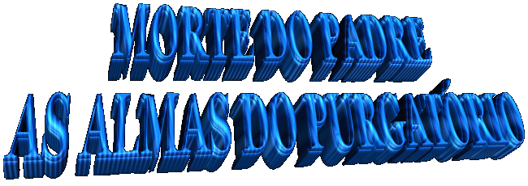
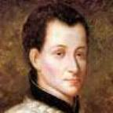
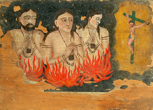
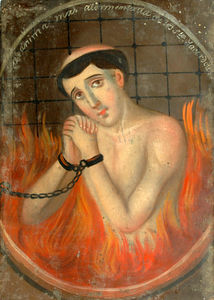
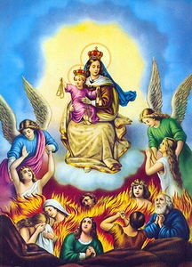

Mas tudo se fazia em segredo. Entretanto, Catherine Mayneaud de Bisefrand, uma de suas penitentes, sabendo da notícia, decidiu divulgá-la para todos. E assim, solicitou permissão para avisar a Irmã Margarida. Diante do anúncio, Margarida Maria pediu a sua amiga para avisar ao Padre de não viajar, se isto não fosse transgredir em nada a ordem de seus superiores. A mensagem foi transmitida com a necessária urgência. Mas, o Padre surpreso, quis estar mais precisamente informado dos motivos que levaram a venerável Irmã lhe enviar aquele aviso. Desse modo, pedia que ela escrevesse algumas palavras. Ela respondeu imediatamente. Sua resposta interrompeu a vontade do Padre. O bilhete em questão trazia apenas a seguinte frase: «Il m'a dit qu'il veut le sacrifice de votre vie ici» (O SENHOR me disse que quer o sacrifício de sua vida aqui).
O Padre da Colombière permaneceu em Paray para obedecer à ordem celeste, e morreu no domingo dia 15 de Fevereiro de 1682, às 19 horas, poucos dias após o aviso da Irmã.
Frequentemente, nas noites de quinta para a sexta-feira, Irmã Margarida Maria era, sem ela saber, um motivo de admiração para toda a Comunidade, porque permanecia diante do SANTÍSSIMO SACRAMENTO numa atitude de uma alma totalmente consumida em DEUS. Uma só coisa tinha poder sobre ela: a obediência. Como normalmente era uma noite fria, se alguém lhe dissesse: “Minha Irmã, nossa Madre vos manda ir se aquecerâ€, ela ia passivamente, sem nada dizer e lá permanecia durante quinze minutos e depois retornava ao mesmo lugar diante de JESUS, onde habitava o seu coração.
A Madre Greyfié, nos apresenta outro aspecto: “Eu me recordo que numa quinta-feira santa, ela saía de uma longa enfermidade, a qual ainda não estava totalmente recuperada. Todavia, veio me pedir que tivesse grande misericórdia, e lhe concedesse participar da Vigélia do SANTÍSSIMO SACRAMENTO. Ela não estava com uma aparência totalmente saudável, mas para lhe dar alguma consolação, permiti de ir ao coro depois das oito horas da noite, ou seja, depois de terminada a procissão na cidade. Ela aceitou esta primeira oferta com muita humildade e doçura, me pedindo para prolongar este tempo, dizendo que ela lá estaria uma parte da noite rezando por ela e a outra, pelas boas almas. Era assim que entre ela e eu, Margarida colocou as Almas do Purgatório, para o interesse daquelas e para o seu também. Entreguei a noite a esta generosa convalescente que não esperou chegar às oito horas e trinta minutos para tomar o seu lugar no coro, lado direito, defronte a estante (pélpito), e lá permaneceu de joelhos, com as mãos juntas, sem nenhum apoio, nem se mexendo, até o dia seguinte, a hora prima (hora canônica) , que ela saiu do coro com as outras Irmãsâ€.
AS ALMAS DO PURGATÓRIO
As Almas do Purgatório
ocuparam um lugar de destaque na vida de nossa Santa e por isso, é 
NOSSO SENHOR tinha confiado a sua abenãoada serva às pobres almas, para ser sua consoladora e sua vítima. Pode-se dizer que ela era habitualmente cercada por aquelas almas muito agoniada que a ela se dirigiam com toda confiança, a fim de serem socorridas. Varias visões que ela teve são fatos que dáo para refletir. Entre outros, ela descreve este:
"Uma vez, estando diante do SANTÍSSIMO SACRAMENTO, de súbito apresentou-se diante de mim uma pessoa coberta de chamas, cujos ardores eram tão fortes que me penetravam parecendo que me queimava. O estado lastimável dela me fez ver que aquela alma estava no Purgatório e por isso derramei muitas lágrimas. A alma me disse que era um religioso beneditino, que tinha recebido minha confissão uma vez e que me tinha ordenado receber a Sagrada Comunhão. Disse também, que era por um favor de DEUS que se dirigia a mim, suplicando-me dar alívio as suas penas, me pedindo durante três meses, tudo aquilo que eu pudesse fazer e sofrer em benefício dele. Isto ele me pedia, naturalmente depois que eu conseguisse a autorização da Superiora do Mosteiro. Ele me disse que a causa do seu grande sofrimento é que primeiro, ele preferiu o seu próprio interesse a glória de DEUS, assunto muito ligado a sua reputação; o segundo, foi à falta de caridade para com os seus irmãos; e o terceiro, era a muita afeição natural que tinha pelas criaturas e os muitos testemunhos que tinha dado dele mesmo, realçando a sua própria pessoa nas entrevistas espirituais, procedimento que muito desagradou a DEUSâ€.
Os três meses que se seguiram foram para Margarida Maria de cruciante martírio. Parecia que estava vivendo no fogo. Mas este martírio de chamas tinha sua florescência de graças. No final do tempo, cheio de alegria e gloria, o religioso livre foi gozar da felicidade eterna. Agradecendo a sua libertação, ele prometeu protegê-la diante de Deus.
O Purgatório da Justiça Divina que é individual a cada pessoa, não era fechado para a confidente do CORAÇÃO DE JESUS. Em muitas oportunidades, NOSSO SENHOR lhe fazia ver o que se passava com as almas em purificação. Após a morte de uma Irmã do Mosteiro, Irmã Jeanne-Franãoise Deltufort de Sirot, Margarida ficou amedrontada pela aparição e as confissões da defunta, cuja agonia foi horrorosa. Em vida ela não cultivou a amizade de NOSSA SENHORA e sem a VIRGEM MARIA, sua alma estava perdida. O demônio já acreditava tê-la em suas garras. Por uma autorização muito especial do SENHOR, a falecida apelou para a caridade da Irmã Margarida, lhe revelando aquilo que sofria no seu purgatório. Ela disse: “Bem que eu sofro por verias coisas, mas existem três motivos que me fazem sofrer muito mais do que todo o resto. O primeiro, é minha promessa de obediência que tão mal eu observei, só obedecia aquilo que me agradava. Tais desobediências são uma condenação diante de DEUS. O segundo foi o meu voto de pobreza que não respeitei, pois não queria que faltasse nada para mim, dando ao meu corpo verios consolos supérfluos. Ah! Os religiosos que querem mais do que a real necessidade e não são perfeitamente pobres, são odiosos aos olhos de DEUS! O terceiro motivo foi à falta de caridade, causando desunião entre as outras Irmãs. E por isto as orações que alguém faz para as almas, não são aplicadas a mim. Porque eu não tive caridade com as pessoas em vida, como ia receber caridade, após a morte? Por isso, o SAGRADO CORAÇÃO DE JESUS me vê sofrer sem compaixão, porque eu também nunca tive compaixão e nunca me sacrifiquei por ninguémâ€.

Todavia, a caridade da Irmã Margarida Maria se estendia sem exceções, a todos aqueles infelizes prisioneiros da Justiça Suprema. “Eu não escolho os meus amigos sofredoresâ€, ela escreveu a Madre de Saumaise.
Rezando por duas pessoas que tinham sido destaques em todo o mundo, ela viveu como se fosse um condenado a um longo purgatório. Isto porque, todas as orações e todos os sufrágios oferecidos a DEUS para o repouso daquelas duas pessoas, eram desviados e foram aplicados às almas de verias famélias de seus súditos, que tinham sido arruinados por eles, por falta de caridade e de justiça. Em vida, nada eles tinham feito em benefício daqueles mortos, assim o SENHOR decidiu desviar as orações de agora, que eram dedicadas a eles, em beneficio daqueles que foram prejudicados.
No primeiro dia do ano a Santa rezou por três amigos falecidos, dos quais dois eram religiosos e o outro secular. “A qual você quer que eu livre por suas doaçõesâ€? Perguntou-lhe NOSSO SENHOR. ELE mandou que ela fizesse a escolha. Então, ela livrou a alma da pessoa secular, declarando ter ela menos recursos para se purificar do que as almas religiosas, porque estas, o SENHOR lhes tinha dado, durante suas vidas, muitos meios de se purificar através da observância de suas regras religiosas.
Os conhecimentos sobrenaturais da Irmã Margarida Maria, relativamente às Almas do Purgatório, eram tão expressivos que pessoas vinham de fora se informar com ela, do estado de seus parentes falecidos. Humildemente ela respondia:
“È porque eu sabia o que se passava no Purgatório de cada almaâ€!
Algum tempo depois ela disse a algumas pessoas: “DEUS proporcionou uma grande graça a tal pessoa, ELE a colocou no Seu Paraíso, depois dela passar um tempo no Purgatório. O SENHOR exorta as pessoas a continuarem as suas orações em benefício das almas, porque só assim elas conseguirão a sua libertaçãoâ€.
A esposa do Doutor Billet que tinha morrido, apareceu a Serva de DEUS pedindo-lhe orações e a incumbiu de salvar o seu marido, informando-lhe duas coisas secretas relativamente à justiça e a sua salvação. A Madre Greyfié tinha aversão a tais mensagens e não queria transmitir nada sobre elas. Pouco tempo depois, nova aparição da mesma defunta a Irmã Margarida e nova resistência da Superiora. Mas na noite seguinte, um ruído tão horrível se fez ouvir na cela da Madre (a alma da esposa do Dr. Billet apelou violentamente), que ela pensou morrer de pavor, e chamando Margarida para descrever a ocorrência, apressou-se a advertir o Doutor Billet sobre o comunicado.
Parecia que a Madre Greyfié não tinha mais nada a desejar para estar convencida da verdade de todas as graças que a Irmã Margarida Maria recebia. Mas não! Colocada por DEUS aos pés dela, esta viril superiora quis passar Margarida no crivo, por assim dizer, mais uma vez, exigindo prova sobre prova. Porque na verdade, ela era um instrumento que o ESPÍRITO SANTO utilizava, para revelar a todos que era dessa forma que funciona. Por isso, a Madre Greyfié obteve tudo o que pediu apesar de parecer em algumas oportunidades, imprudente na sua conduta. Eis o fato.
As enfermidades de nossa Santa eram tais, que durante todo o ano de 1682, elas não lhe deixavam nem durante quatro horas. No dia 21 de Dezembro, a Madre Greyfié foi se encontrar com a doente na enfermaria e lhe deu um bilhete dizendo para ela fazer aquilo que estava escrito. Irmã Margarida Maria abriu o papel e leu: “Eu vos ordeno, em virtude da santa obediência, que você peça a DEUS que me faça conhecer se isto que acontece e se passa com você, desde que sou encarregada de lhe conduzir, é do seu espírito e do seu movimento, ou de qual natureza? E para indicar que tudo o que lhe acontece é de DEUS, peça-lhe que ELE interrompa os seus males corporais, durante o espaço de cinco meses somente, sem que você tenha, durante este tempo, necessidade de qualquer remédio e nem de faltar às obrigações ordinárias da Regra do Mosteiro. Mas, se isto não é de DEUS, mas da natureza que age em seu interior e exterior, ELE lhe deixe, conforme o seu costume, tanto de uma maneira, como de outra. Assim, nós estaremos seguras da verdadeâ€.
Relatando o fato, Irmã Margarida Maria acrescentou:- “Uma pessoa me levou para fora da enfermaria, com palavras inspiradas por NOSSO SENHOR. Então, apresentei o bilhete ao Meu Soberano, O Qual já estava ciente do conteúdo e ELE me respondeuâ€:
“Eu prometo minha filha, como prova do bom espírito que a conduz, lhe manter durante anos sem qualquer problema de saúde, conforme o pedido dela e também, confirmarei tirando toda outra duvida que ela possuaâ€.
E depois: “ajoelhada à direita no Coro, na elevação do SANTÍSSIMO SACRAMENTO, me senti, muito mais sensível que em todas as minhas enfermidades. E me encontrava com uma imensa disposição e uma excelente saúde, própria de uma pessoa robusta, depois de um longo tempo doenteâ€.
No dia 21 de Maio de 1683,
completou cinco meses daquele tempo pedido pela Madre Greyfié, que 
O ano de 1683 foi o ano de saúde para a Serva de DEUS. Mas, isto a privou da sua generosidade sem igual para o sofrimento? Ó! Não! E desde que ela era então mais amiga das almas do Purgatório, a dor, como um fogo inteligente, parecia reduzir a cinzas aquelas partes mais delicadas de seu ser moral. Tal trabalho interior não se realiza sem as indizíveis dores. Todavia, sua alma gostava das celestes consolações, em vista da felicidade eterna que as almas alcançavam, quando saiam do Purgatório.
Dia 5 de Fevereiro de 1683, a Madre Philiberte-Emmanuel de Monthoux, Superiora do primeiro Mosteiro de Annecy, morreu santamente. Todavia, ela tinha ainda que se purificar antes de aparecer diante de DEUS. NOSSO SENHOR mostrou a Irmã Margarida Maria que as orações e as boas obras oferecidas por aquela venerável Madre durante a sua existência na Ordem da Visitação, lhe propiciavam grandes alívios. A quinta-feira seguinte, 15 de Abril, lhe pareceu ver na Santa Missa, aquela alma debaixo do célice que continha a hóstia consagrada, recebendo os méritos da noite de agonia do Salvador. No dia da Páscoa, ela renasceu, estava bem perto de ficar inteiramente livre. Enfim, no dia 2 de Maio, domingo do Bom Pastor, Margarida a contemplou indo como se estivesse mergulhada e se abismasse na gloria Divina, em companhia de outra alma, que era do Mosteiro de Paray, Irmã Jeanne-Catherine Gâcon, falecida no dia 18 de Janeiro anterior. Subindo ao Céu, esta querida Irmã repetia “O amor triunfou, o amor alegra, o amor em DEUS se regozijaâ€!
A Madre Anne-Séraphine Boulier, morreu no Mosteiro de Dijon, no dia 7 de Setembro de 1683. Nossa Santa não pode se entristecer, porque tinha conhecimento da recompensa eterna daquela alma, e, um pouco mais tarde, ela escreveu sobre este assunto: “Eu acredito que ela esta na bem alta glória e na fila dos Serafins, onde estão aqueles destinados a realizar homenagem perpétua ao SAGRADO CORAÇÃO DE NOSSO SENHOR JESUS CRISTOâ€.
No Mês de Abril de 1864, a
jovem Antoinetté Rosalie de Sennecé, entrou no Mosteiro de Paray como
“Irmã de Pequeno Hábitoâ€. Ela teve um acidente de apoplexia e um sono letárgico que
lhe deixou sem esperança de vida, inclusive, impossibilitada de receber os
éltimos sacramentos. Toda a Comunidade Religiosa que gostava desta amável
criança ficou consternada. A Madre Greyfié, para obter uma graça em benefício da
pequena doente a fim dela recuperar o uso da razão, ordenou a Irmã Margarida de
prometer a NOSSO SENHOR aquilo que ELE lhe indicasse desejar naquele momento.
Ela se preparava para realizar esta obediência quando o Soberano SENHOR de sua
alma lhe apareceu e lhe assegurou que ELE concederia o favor solicitado, contanto
que ela, Margarida, LHE prometesse três coisas, as quais ELE queria absolutamente
dela. Disse ELE: “A primeira,
de você jamais recusar qualquer cargo na religião; a segunda, de não recusar falar
sobre as Manifestações Sobrenaturais, e a terceira, de não se recusar a escrever
sobre o assuntoâ€.
“A estes pedidos, eu confesso que todo o meu ser tremeu, pela grande repugnância
e aversão que sentia quanto a eles. Respondi: Ó, Meu DEUS! O SENHOR atingiu
o meu ponto fraco, mas eu obedeço e pedirei permissão a minha Superiora, em todas
as oportunidades que se evidenciarem para atender a ordem do SENHOR. DEUS me
obrigou a fazer uma promessa em forma de voto, de maneira a não poder jamais fugir
daquela obrigação. Mas, ai! Quantas infidelidades eu tenho cometido! Porque ELE
não me leva para os castigos que mereço? Foi muito difícil obedecer àquela ordem
do SENHOR, que durou toda a minha vida, mas a nossa querida Irmã do Pequeno
Hábito recebeu os sacramentosâ€.
Na Festa da Ascensão de 1684, Madre Greyfié acabou de completar seis anos de seu governo em Paray e foi substituída pela nova Superiora Semur-en-Auxois. Alguém pode dar o testemunho de que ela tinha conduzido até o limite, as experiências que sentiu o dever de fazer com relação às virtudes excepcionais da Irmã Margarida Maria Alacoque. Neste gênero, nada restava a fazer. A prova tinha sido sempre vitoriosa. Assim sendo, ela podia cessar de ordenar obediências a aquela filha, mas jamais deixaria de amá-la e de acreditar na verdade da missão que Margarida recebeu de DEUS.
Eis agora, outra Superiora, uma alma que também vai ganhar o CORAÇÃO DE JESUS! Madre Semur permanecerá Superiora durante seis anos.